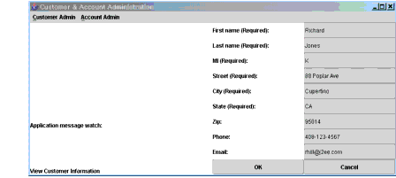

Application Client
Sometimes, enterprise applications use a stand-alone client application for handling tasks such as system or application administration. For example, the Duke's Bank application uses an application client to administer customers and accounts. This capability is useful in the event that the site becomes inaccessible for any reason or if a customer prefers to communicate things such as changes to account information by phone.
The application client shown in Figure 36-4 handles basic customer and account administration for the banking application through a Swing user interface. The bank administrator can perform any of the following functions by making menu selections.

Figure 36-4 Application Client
Customer administration:
Account administration:
Error and informational messages appear in the left pane under
Application message watch:, and data is entered and displayed in the right pane.The Classes and Their Relationships
The source code for the application client is in the
<INSTALL>/j2eetutorial14/examples/bank/src/com/sun/ebank/appclient/directory. The application client is divided into three classes:BankAdmin,EventHandle, andDataModel; the relationships among the classes are depicted in Figure 36-5.

Figure 36-5 Relationships among Application Client Classes
BankAdminbuilds the initial user interface, creates theEventHandleobject, and provides methods for theEventHandleandDataModelobjects to call when they update the user interface.
EventHandlelistens for button clicks by the user, takes action based on which button the user clicks, creates theDataModelobject, calls methods in theDataModelobject to write data to and read data from the enterprise beans, and calls methods in theBankAdminobject to update the user interface when actions complete.
DataModelretrieves data from the user interface, performs data checks, writes valid data to and reads stored data from the underlying database, and calls methods in theBankAdminobject to update the user interface based on the success of the database read or write operation.BankAdmin Class
The
BankAdminclass, which creates the user interface, is the class that contains themainmethod and providesprotectedmethods for the otherBankAdminapplication classes to call.main Method
The
mainmethod creates instances of theBankAdminandEventHandleclasses. Arguments passed to themainmethod are used to initialize a locale, which is passed to theBankAdminconstructor.public static void main(String args[]) { String language, country; if(args.length == 1) { language = new String(args[0]); currentLocale = new Locale(language, ""); } else if(args.length == 2) { language = new String(args[0]); country = new String(args[1]); currentLocale = new Locale(language, country); } else currentLocale = Locale.getDefault(); frame = new BankAdmin(currentLocale); frame.setTitle(messages.getString( "CustAndAccountAdmin")); WindowListener l = new WindowAdapter() { public void windowClosing(WindowEvent e) { System.exit(0); } }; frame.addWindowListener(l); frame.pack(); frame.setVisible(true); ehandle = new EventHandle(frame, messages); System.exit(0); } }Constructor
The
BankAdminconstructor creates the initial user interface, which consists of a menu bar and two panels. The menu bar contains the customer and account menus, the left panel contains a message area, and the right panel is a data display or update area.Class Methods
The
BankAdminclass provides methods that other objects call when they need to update the user interface. These methods are as follows:
clearMessages: Clears the application messages that appear in the left panelresetPanelTwo: Resets the right panel when the user selects OK to signal the end of a data view or update operationcreatePanelTwoActLabels: Creates labels for account fields when account information is either viewed or updatedcreateActFields: Creates account fields when account information is either viewed or updatedcreatePanelTwoCustLabels: Creates labels for customer fields when customer information is either viewed or updatedcreateCustFields: Creates customer fields when customer information is either viewed or updatedaddCustToActFields: Creates labels and fields when an add customer to account operation is invokedmakeRadioButtons: Makes radio buttons for selecting the account type when a new account is createdgetDescription: Makes the radio button labels that describe each available account typeEventHandle Class
The
EventHandleclass implements theActionListenerinterface, which provides a method interface for handling action events. Like all other interfaces in the Java programming language,ActionListenerdefines a set of methods but does not implement their behavior. Instead, you provide the implementations because they take application-specific actions.Constructor
The constructor receives an instance of the
ResourceBundleandBankAdminclasses and assigns them to its private instance variable so that theEventHandleobject has access to the application client's localized text and can update the user interface as needed. The constructor also calls thehookupEventsmethod to create the inner classes to listen for and handle action events.public EventHandle(BankAdmin frame, ResourceBundle messages) { this.frame = frame; this.messages = messages; this.dataModel = new DataModel(frame, messages); //Hook up action events hookupEvents(); }actionPerformed Method
The
ActionListenerinterface has only one method, theactionPerformedmethod. This method handles action events generated by theBankAdminuser interface when users create a new account. Specifically, it sets the account description when a bank administrator selects an account type radio button, and it sets the current balance to the beginning balance for new accounts when a bank administrator presses the Return key in the Beginning Balance field.hookupEvents Method
The
hookupEventsmethod uses inner classes to handle menu and button press events. An inner class is a class that is nested or defined inside another class. Using inner classes in this way modularizes the code, making it easier to read and maintain.EventHandleinner classes manage the following application client operations:DataModel Class
The
DataModelclass provides methods for reading data from the database, writing data to the database, retrieving data from the user interface, and checking that data before it is written to the database.Constructor
The constructor receives an instance of the
BankAdminclass and assigns it to its private instance variable so that theDataModelobject can display error messages in the user interface when itscheckActData,checkCustData, orwriteDatamethod detects errors. The constructor also receives an instance of theResourceBundleclass and assigns it to its private instance variable so that theDataModelobject has access to the application client's localized text.Because the
DataModelclass interacts with the database, the constructor also has the code to establish connections with the remote interfaces for theCustomerControllerBeanandAccountControllerBeanenterprise beans, and the code to use their remote interfaces to create instances of theCustomerControllerBeanandAccountControllerBeanenterprise beans.//Constructor public DataModel(BankAdmin frame, ResourceBundle messages) { this.frame = frame; this.messages = messages; //Look up and create CustomerController bean try { CustomerControllerHome customerControllerHome = EJBGetter.getCustomerControllerHome(); customer = customerControllerHome.create(); } catch (Exception namingException) { namingException.printStackTrace(); } //Look up and create AccountController bean try { AccountControllerHome accountControllerHome = EJBGetter.getAccountControllerHome(); account = accountControllerHome.create(); } catch (Exception namingException) { namingException.printStackTrace(); } }Methods
The
getDatamethod retrieves data from the user interface text fields and uses theString.trimmethod to remove extra control characters such as spaces and returns. Its one parameter is aJTextfieldso that any instance of theJTextfieldclass can be passed in for processing.private String getData(JTextField component) { String text, trimmed; if(component.getText().length() > 0) { text = component.getText(); trimmed = text.trim(); return trimmed; } else { text = null; return text; } }The
checkCustDatamethod stores customer data retrieved by thegetDatamethod, but first it checks the data to be sure that all required fields have data, that the middle initial is no longer than one character, and that the state is no longer than two characters. If everything checks out, thewriteDatamethod is called. If there are errors, they are printed to the user interface in theBankAdminobject. ThecheckActDatamethod uses a similar model to check and store account data.The
createCustInfandcreateActInfmethods are called by theEventHandleclass to refresh the customer and account information display in the event of a view, update, or add action event.Create Customer Information
For a view or update event, the
createCustInfmethod gets the customer information for the specified customer from the database and passes it to thecreateCustFieldsmethod in theBankAdminclass. A Boolean variable is used to determine whether thecreateCustFieldsmethod should create read-only fields for a view event or writable fields for an update event.For a create event, the
createCustInfmethod calls thecreateCustFieldsmethod in theBankAdminclass with null data and a Boolean variable to create empty editable fields for the user to enter customer data.Create Account Information
For a view or update event, the
createActInfmethod gets the account information for the specified account from the database and passes it to thecreateActFieldsmethod in theBankAdminclass. A Boolean variable is used to determine whether thecreateActFieldsmethod should create read-only fields for a view event or writable fields for an update event.For a create event, the
createActInfmethod calls thecreateActFieldsmethod in theBankAdminclass with null data and a Boolean variable to create empty editable fields for the user to enter customer data.Adding a customer to an account or removing an account events operate directly on the database without creating any user interface components.
All of the material in The J2EE(TM) 1.4 Tutorial is copyright-protected and may not be published in other works without express written permission from Sun Microsystems.